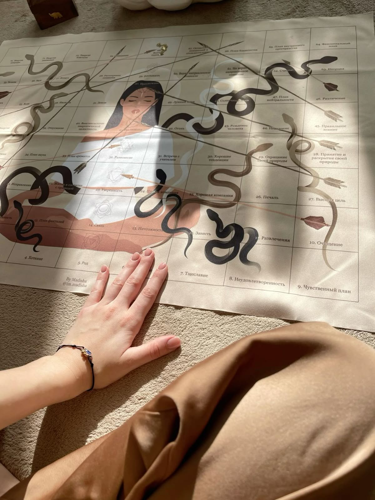
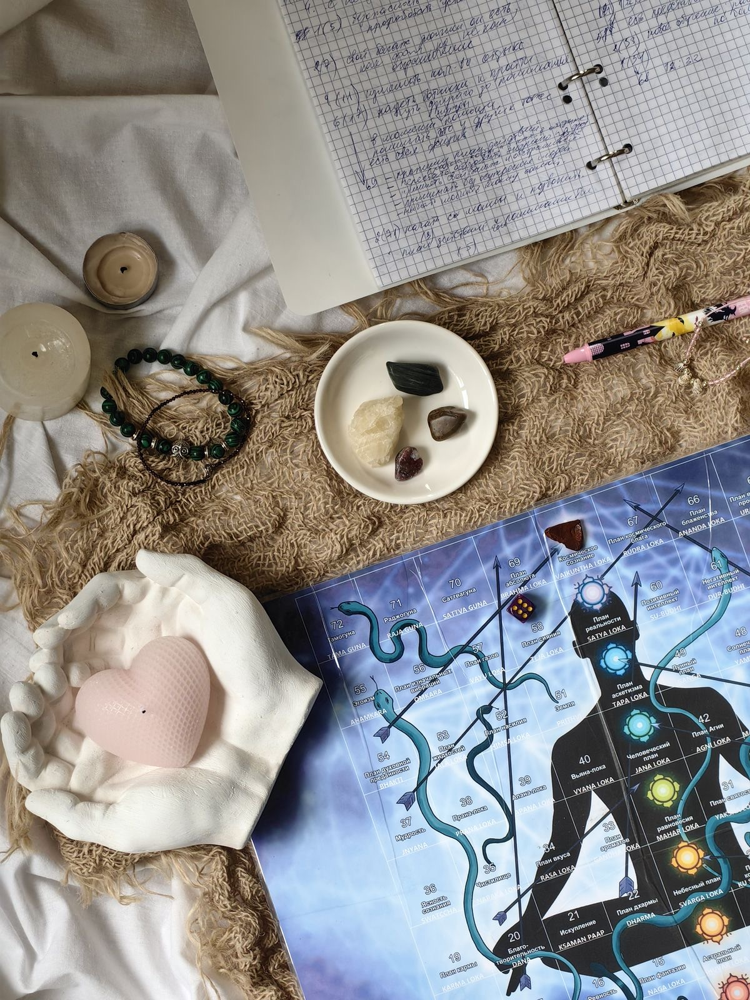
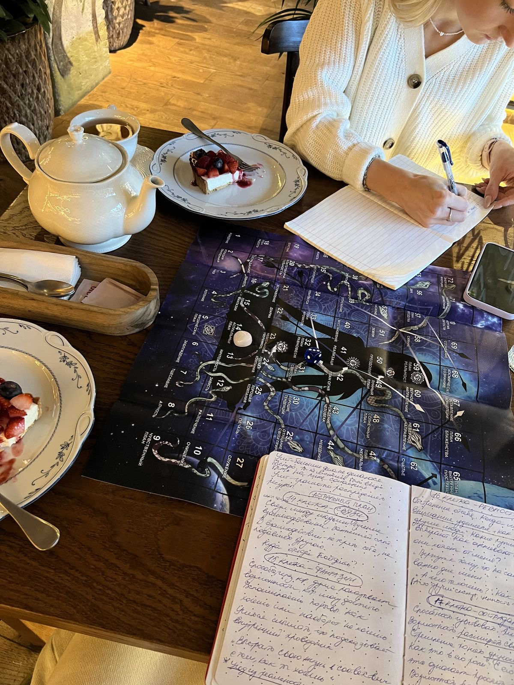
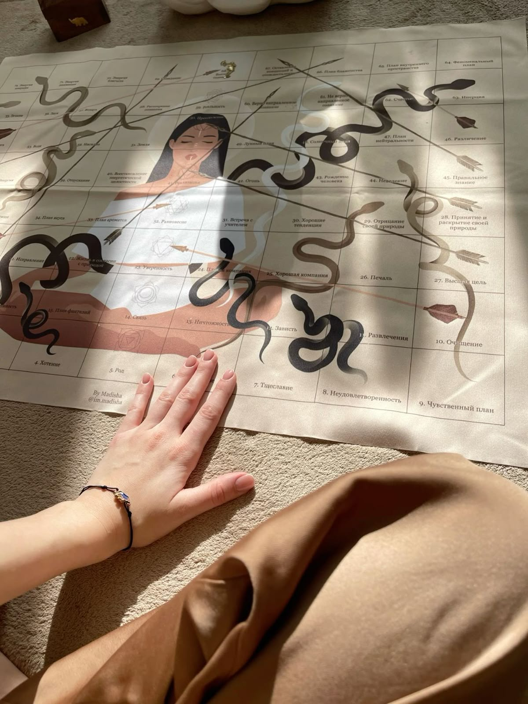
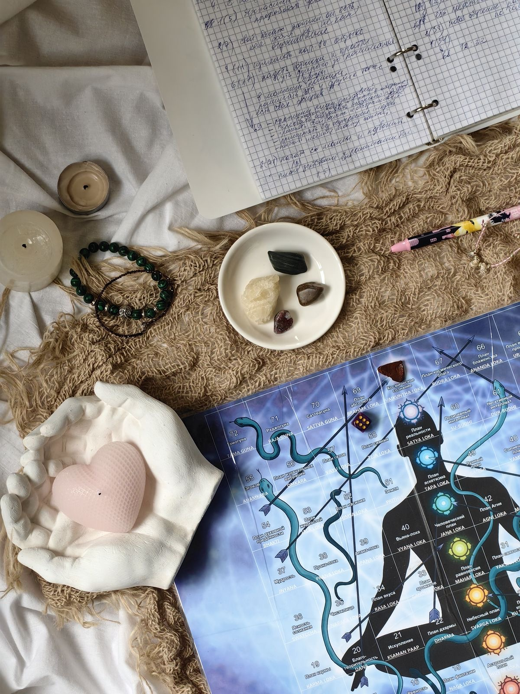
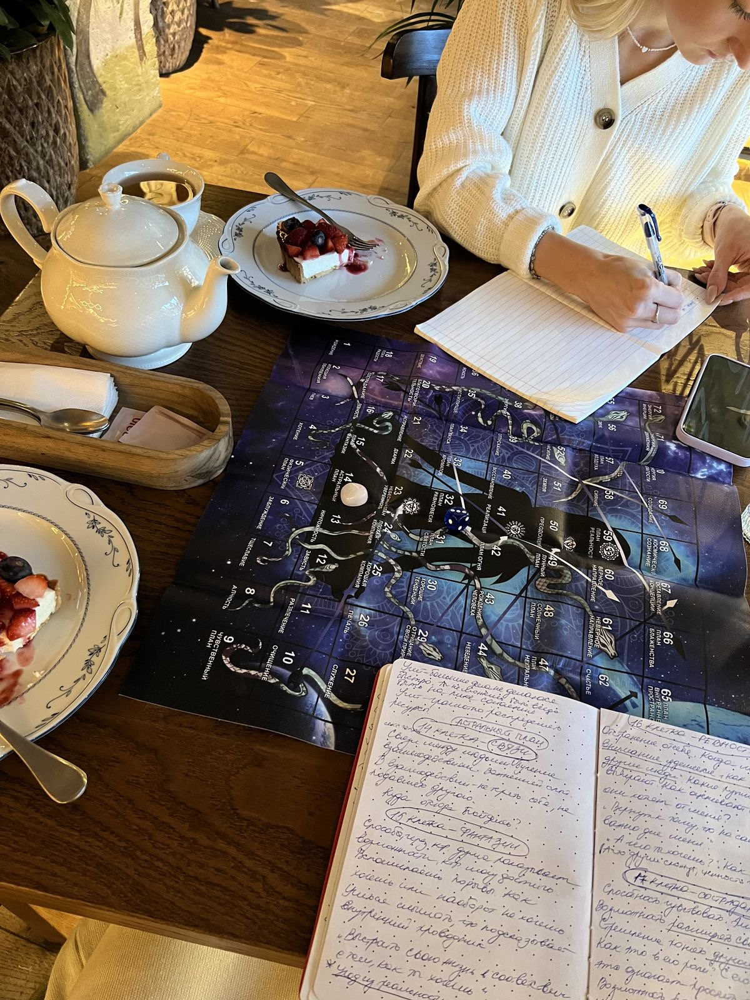

Оля ВОВКОДАВ
+38 (066) 626 37 71
+38 (066) 626 37 71
 






Мій шлях почався з особистого пошуку відповідей. Через внутрішні кризи, втому, повторення болісних ситуацій я зрозуміла: життя говорить з нами мовою знаків, чисел і досвіду. Мене завжди цікавило: чому з нами трапляється те, що трапляється, і як це змінити?
Так я прийшла до вивчення нумерології, потім — кармології, а згодом — до глибокої гри «Ліла», яка поєднує в собі духовну практику, психологію та древнє знання.
Я допомагаю людям:
• побачити свою справжню природу , таланти, кармічні задачі;
• усвідомити глибинні причини труднощів у житті, стосунках, фінансах;
•знайти внутрішню опору та напрямок руху.
Я не даю готових рішень — я проводжу тебе до твоєї істини, бо вона вже є всередині тебе.
«Ліла» — це древня ведична гра самопізнання, яку інколи називають «духовною психотерапією» або «дзеркалом душі».
Це не просто гра. Це сакральний інструмент, який працює з підсвідомістю, кармою, внутрішніми переконаннями та енергетичними станами.
🔮 Уяви, що вся твоя життєва ситуація — це поле з клітинками. Кожна клітинка — це стан душі, рівень свідомості або життєвий урок. Через кидок кубика ти «випадково» (але насправді — дуже точно!) потрапляєш туди, де ти є зараз у своїй ситуації.
Під час гри ти:
• бачиш, де саме ти застрягла;
• розумієш, який урок ти проходиш;
• отримуєш підказки від своєї інтуїції та Вищого Я;
• знаходиш внутрішні ресурси, щоб рухатись далі.
Гра відкриває те, що розум не завжди бачить, а душа — давно відчуває.
«Ліла» допоможе, якщо ти:
• стоїш на роздоріжжі або в стані «я не знаю, куди йти»;
• знову й знову стикаєшся з тими самими проблемами;
• шукаєш свій шлях, справу життя чи розуміння свого призначення;
• хочеш подивитися на ситуацію з боку — чесно, глибоко, по-справжньому.
✨ Я з любов’ю проведу тебе в цій грі — м’яко, без осуду, з підтримкою й повагою до твого шляху.
Гру я проводжу як онлайн так і офлайн.
Індивідуально — 1700 грн
Групова — 1200 грн з людини